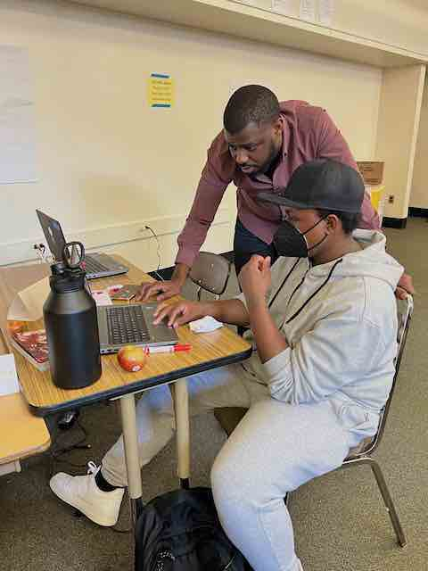
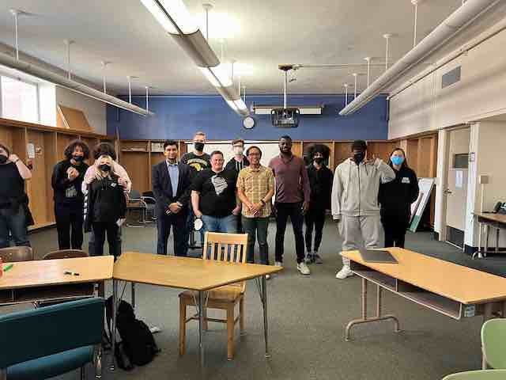
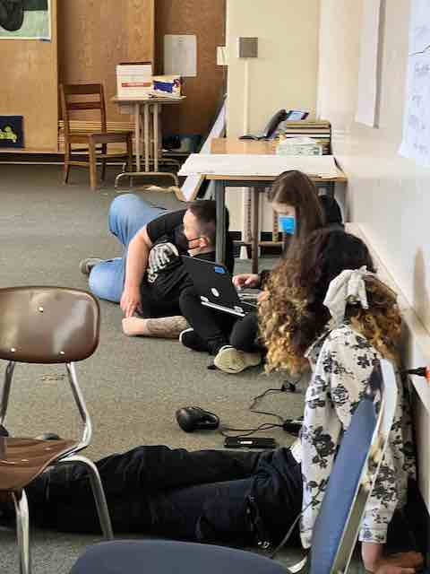

My Blog
November 2023
I've been on a journey of testing this past year and wanted to lay out the different types of testing including unit and integration testing. Below is what I learned: coverage report - is one measure of testing meaning simply increasing code coverage does not necessarily translate into better testing
July 2023
Choosing Pelican
Pelican is a web framework that uses Python. My friend Joe used it to build his site for the same reason.
May 2023
Here's some pics from a hackathon I ran at Jefferson High School in Portland, Oregon.
  